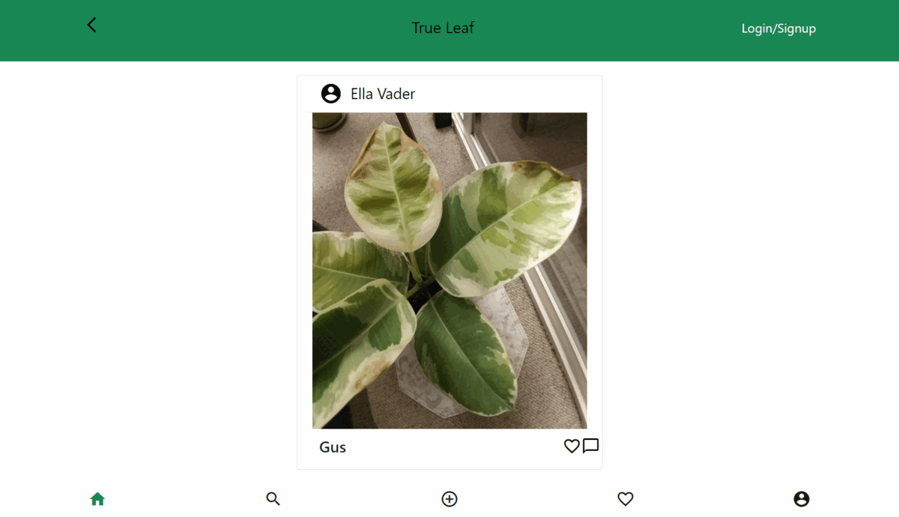
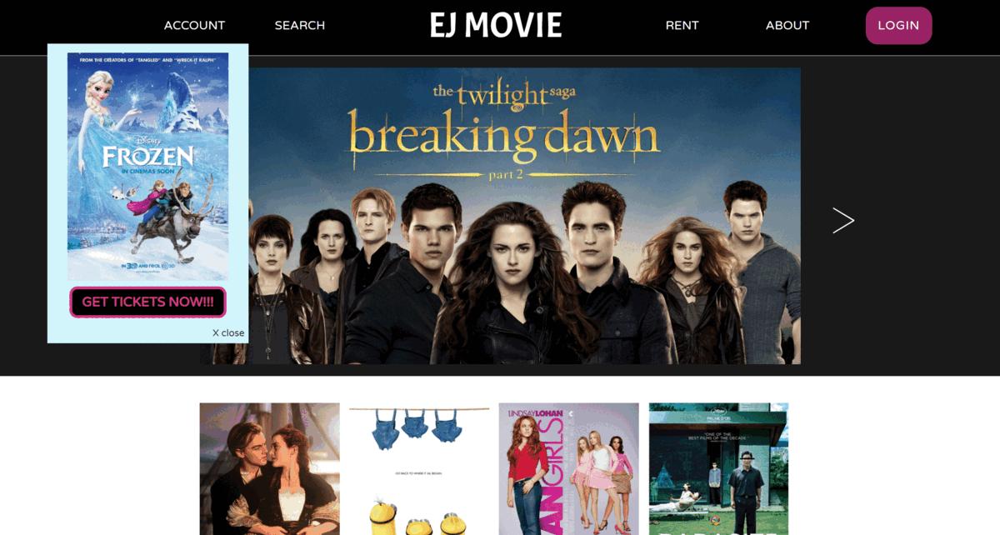

PLANT CARE WEB APP
DEVELOPER | GROUP PROJECT
SEP 2021 - DEC 2021
- Developed a plant care web app with 2 team members in an agile environment to make plant ownership easier by simplifying information, tools, and a community
- Used Firebase to enable users to share their plants and see other's plants in the main feed
- Connected search bar to firebase and improved UX/UI design
- Technologies Used: JavaScript, HTML, CSS, Bootstrap, Firebase, and Git/GitHub

MOVIE INFORMATION WEBSITE
UX & WEB DEVELOPER | PERSONAL PROJECT
DEC 2021 - CURRENT
- Developing a website that enables users to find movies and their information easily
- Showed the result according to the users’ searches by making a request to TMDB API using Axios
- Technologies Used: JavaScript, HTML, jQuery, Axios, Bootstrap and Git/GitHub